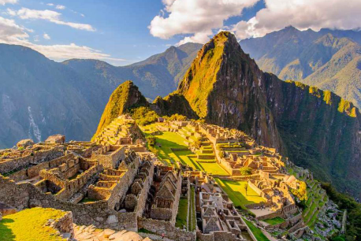

Maravillas del Mundo Moderno
Machu Picchu
Es una ciudad inca, ubicada en las alturas de las montañas de los Andes en Perú, sobre el valle del río Urubamba. Se construyó en el siglo XV y luego fue abandonada, es famosa por sus sofisticadas paredes de piedra seca que combinan enormes bloques sin el uso de un mortero. El uso exacto que tuvo aun sigue siendo un misterio.
© Copyrigth 2021. Todos los derechos Reservados. Venezuela